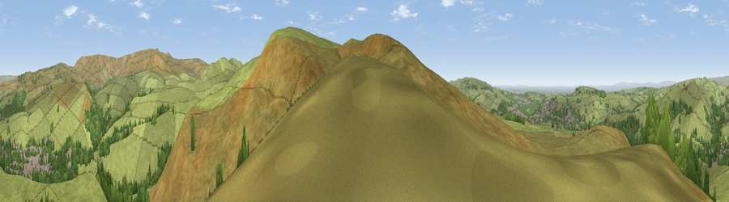

Viewpoint near Hayfield
#14094 in England · top 23% of its area beats it · near HayfieldWhere it is
The exact computed spot (SK 03325 85825). Click the marker for map links.
The view, rendered

A 360° render of this exact spot computed from the terrain model, tree cover and land cover — summer colours, afternoon light, calibrated against photographs of famous viewpoints. Real trees, hedges and buildings will differ in detail.
The panorama
Grey silhouette: terrain skyline in each direction (720 bearings, Earth curvature and refraction included). Dashed green: skyline with trees (+15 m) and buildings (+8 m) as obstacles. Blue strip: how far the ground is visible on each bearing.
Where the view opens
Wedge length = distance to the farthest visible ground on that bearing (vegetation-aware). Rings at 10, 25 and 50 km.
What fills the view
84% grassland · 13% woodland · 3% built-up
Angular shares of the visible panorama (visual magnitude), not map area. Landscape diversity 0.22 (0–1 Shannon).
Key numbers
More beautiful places nearby
The staircase of upgrades: each row has a higher view potential than everything closer. Driving times are estimates from straight-line distance, calibrated against real road routing — check an actual route before setting out.
| Place | Direction | Drive | Score |
|---|---|---|---|
| Viewpoint near Hayfield | SSE · 1 km | ~3 min | 67.2 |
| Chinley Churn (North) | SSE · 2 km | ~4 min | 68.5 |
| Chinley Churn (South) | S · 2 km | ~6 min | 68.9 |
| Viewpoint near Upper Booth | ENE · 4 km | ~9 min | 72.6 |
| Lord's Seat | ESE · 8 km | ~16 min | 73.1 |
| Harrop Edge | NNW · 12 km | ~22 min | 74.6 |
| Wild Bank | NNW · 13 km | ~24 min | 76.2 |
| Viewpoint near Carrbrook | NNW · 15 km | ~27 min | 77.1 |
53.36928, -1.95149 · source: screening · position refined by local search. Computed location — check access rights before visiting.